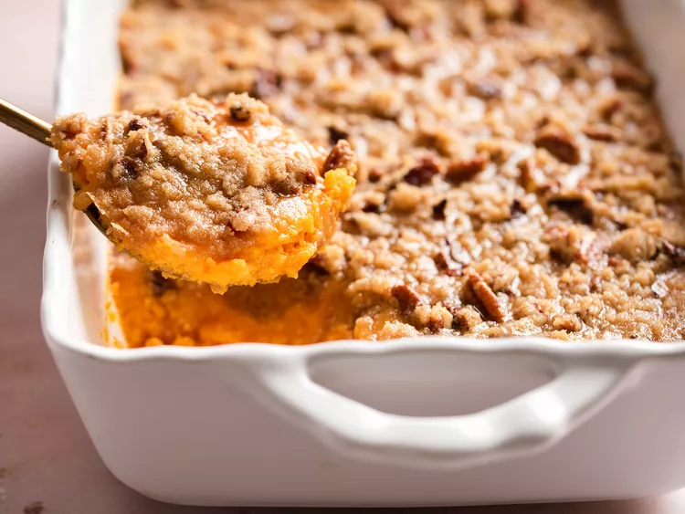

Sweet Potato Casserole

Description
Baked sweet potato casserole topped with a delicious pecan topping
Ingredients
- 4 cups peeled, cubed sweet potatoes
- 2 large eggs, beaten
- ½ cup white sugar
- ½ cup milk
- 4 tablespoons butter, softened
- ½ teaspoon vanilla extract
- ½ teaspoon salt
- ½ cup packed brown sugar
- ⅓ cup all-purpose flour
- 3 tablespoons butter, softened
- ½ cup chopped pecans
Steps
- Gather the ingredients. Preheat oven to 325 degrees F (165 degrees C).
- To prepare the sweet potatoes: Put sweet potatoes in a medium saucepan and cover with water. Cook over medium-high heat until tender, 10 to 15 minutes. Drain and transfer to a large bowl.
- Mash drained sweet potatoes with a fork. Add eggs; mix until well combined. Add sugar, milk, butter, vanilla, and salt; mix until smooth. Transfer to a 9x13-inch baking dish.
- To make the topping: Mix brown sugar and flour together in a medium bowl. Cut in butter with a pastry cutter until mixture is coarse and looks like peas; don't overmix. Stir in pecans. Sprinkle topping over sweet potato mixture.
- Bake in the preheated oven until topping is lightly browned, about 30 minutes.
- Serve and enjoy!
Back home